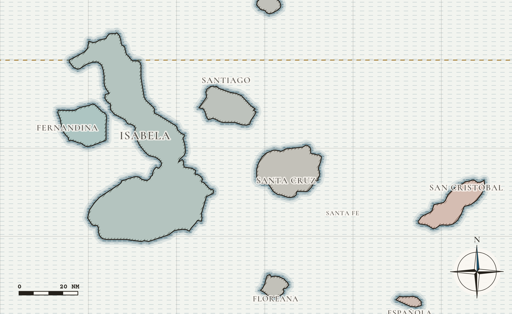
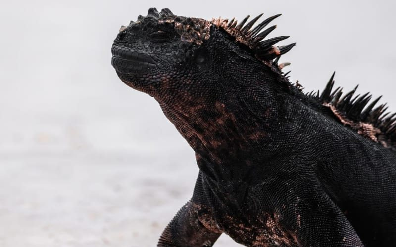
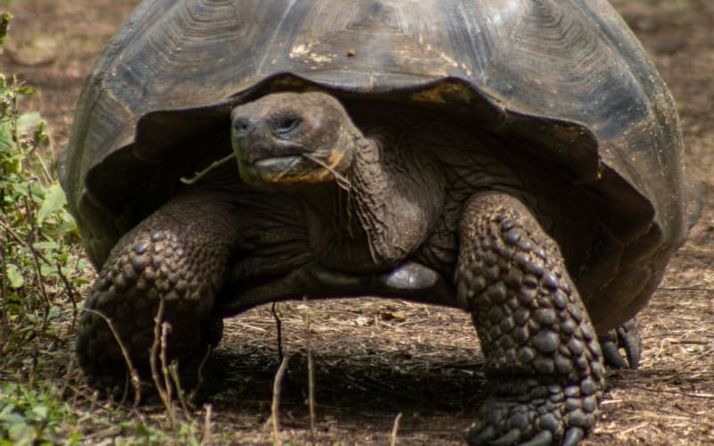
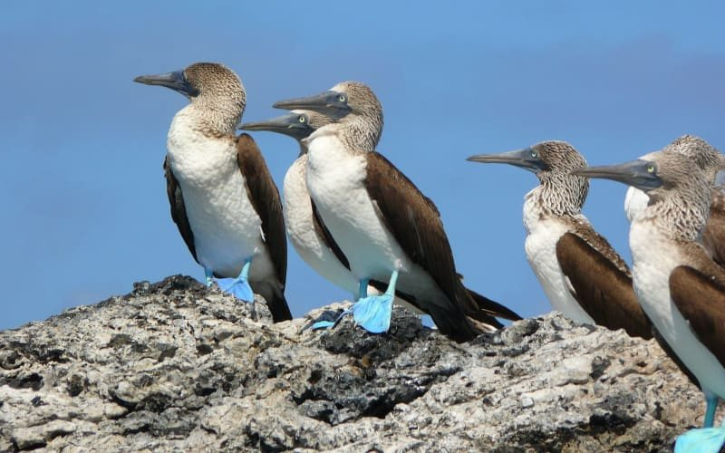
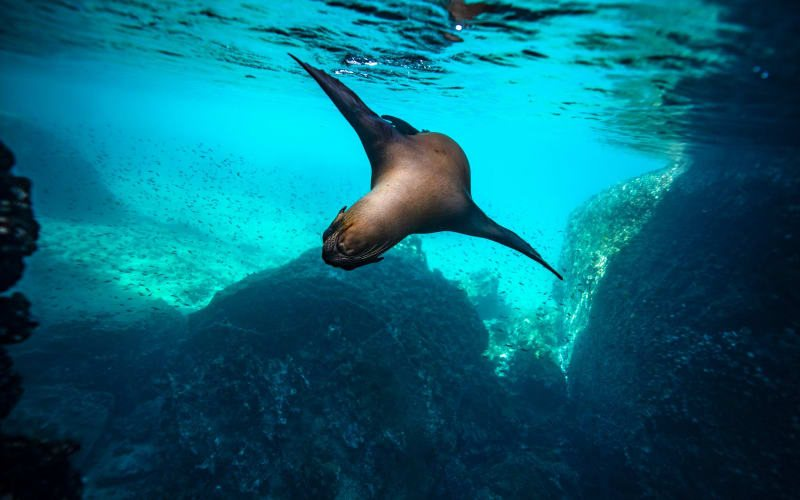
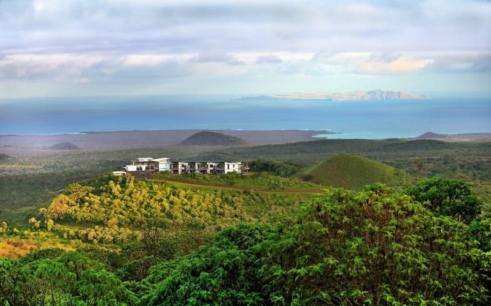

The islands are born in the west over a hotspot and carried east, getting older and softer as they go. Read them in that order and the wildlife makes sense.
Plate I · The archipelago, engraved for James Wild & Co.
Straight answers
What people ask first
When is the best time to go?
December to May for warm, calm water and the best snorkelling. June to November for cooler seas, misty garúa mornings and the richest marine life. There's no bad month, only the month that suits you.
How many days do I need?
Five days shows you one region. Nine lets you combine land and sea. Fifteen sails the whole archipelago from oldest island to youngest.
Sea or land?
A small yacht reaches the far islands, Genovesa and Fernandina included. A highland lodge sleeps better and suits families. The Contrast does three nights ashore, then the yacht.
How many guests on board?
Every vessel we feature carries 16 to 20 guests. The National Park caps group sizes at landings, so small ships get the better rhythm.
What does it cost?
From $[____] per person for four nights aboard, sharing. Whole-yacht charters from $[____]. Park entrance fee [confirm].

Plate II · Younger in the west, older in the east
Why the Galápagos
A conveyor belt you can stand on
Animals here evolved without hunters on land and still behave like it. You step around sea lions, not stalk them.
Old islands in the east are worn and green. Young ones in the west are black lava and still active. Sail one to the other and you watch the place being made.
The National Park sets every landing and every time. Fewer people at each site, a naturalist with every group, and rules that keep it this way.
Voyages
Ways to sail it




1 / 5
ITN-VSL-2026-······ · SCHEDULED VOYAGEI KNOW WHO KNOWSpartner vetted
164 feet, two butlers, built 2025. The new benchmark for a whole-ship charter.
ITN-VSL-2026-······ · The Whole Ship
Take the yacht. Write the route.
Sixteen to twenty guests is a family reunion, a wedding party or three generations. Charter any of the seven Royal Galapagos yachts, or Hermes, and the itinerary becomes a conversation instead of a brochure.
4 to 15 days, departures across 2026 and 2027
Certified naturalist guides, full crew and three meals a day
Specialist guides on request: photography, biology, translators
Snorkel gear and wetsuits, sundecks, jacuzzi, Wi-Fi aboard
Charter rates from $[____] for the vessel. Rate sheets live in Airtable › Partner Documents.
PHOTOHot tub on the sundeck of the Galapagos Sea Star, the open Pacific beyondgalapagos/voyages/galapagos-sea-star/sea-star-sundeck
The sundeck, best seat for frigatebirds riding the mastPhoto: Royal Galapagos
When to go
Never trust a brochure with no weather in it
J
F
M
A
M
J
J
A
S
O
N
D
Season
warm
warm
warm
warm
warm
garúa
garúa
garúa
garúa
garúa
garúa
warm
Sea, approx.
24–26°
24–26°
24–26°
24–26°
24–26°
19–22°
19–22°
19–22°
19–22°
19–22°
19–22°
24–26°
Waved albatross
·
·
·
●
●
●
●
●
●
●
●
●
Best for
snorkel
snorkel
snorkel
snorkel
snorkel
wildlife
wildlife
wildlife
wildlife
wildlife
wildlife
snorkel
Wildlife timing is approximate and varies by year.
PHOTOPikaia Lodge on a green volcanic ridge in the Santa Cruz highlands, the Pacific beyondgalapagos/land/pikaia-lodge/pikaia-highlands

Highlands & Day Boats: the lodge sits on the rim of two extinct cratersPhoto: Pikaia Lodge
On land · from the Expeditions volume
Highlands & day boats
For anyone who sleeps badly at sea, or wants one room for the whole stay: Pikaia Lodge sits on the rim of two extinct craters on Santa Cruz, with its own yacht for day trips to the nearby islands.
Land journeys are built in the Expeditions volume and cross-linked here, so travelers see sea and land side by side.
Fourteen pages, engraved charts, every vessel, and James's notes in the margins.
The Galápagos Ledger
How well we know each one
Entry
Place or vessel
Mark
Margin note
VSL-2026-······
Galapagos Sea Star
I KNOW WHO KNOWSpartner vetted
Sixteen guests. The naturalist decides, and is usually right.
VSL-2026-······
Hermes
I'LL KNOW SOONon James's list
New in 2025. Butlers on a catamaran. I want to see it.
L-103
Española · Suárez Point
I'VE WALKED THE DECKSinspected aboard
Albatross from April. Bring patience and a hat.
L-105
Fernandina · Espinoza Point
I'VE WALKED THE DECKSinspected aboard
Younger than some of your relatives.
Sample marks. James confirms every mark before launch.
Questions
Before you book
Do I need a cruise, or can I see the Galápagos from land?
Both work. A yacht reaches the outer islands; a highland lodge with day boats reaches the islands near Santa Cruz. The Contrast combines three nights ashore with a week at sea.
Is the Galápagos good for solo travelers?
Yes. On a 16-guest yacht you're never a stranger by day two. Ask about single supplements or a shared suite.
Can we charter a whole yacht?
Yes. Seven Royal Galapagos yachts and the Hermes catamaran can be chartered whole for 4 to 15 days.
Is it suitable for children?
A strong fit. Age guidance varies by vessel; we confirm it per departure.
How rough are the crossings?
Most crossings happen at night. June to November brings livelier seas. Catamarans and trimarans ride steadier.
“If you can only do one, do the one with Fernandina in it.”JAMES WILD · CHIEF EXPEDITION OFFICER